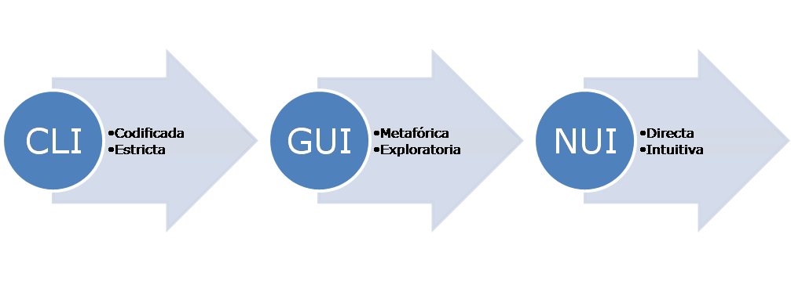

2 Interacción humano-computadora
2.1 Resumen
Los humanos interactúan con las computadoras a través de interfaces de tres tipos:
- Interfaces de línea de comandos: aceptan líneas de texto correspondientes a comandos o instrucciones.
- Interfaces gráficas de usuario: utilizan objetos gráficos para representar las acciones y la información disponibles en la interfaz.
- Interfaces naturales de usuario: la interacción se realiza a través de movimientos, gestos o voz.
Las interfaces gráficas de usuario y las interfaces naturales de usuario son más intuitivas para los usuarios finales. Sin embargo, las interfaces de línea de comandos son más versátiles y facilitan el desarrollo de soluciones más reproducibles.
2.2 Introducción
La interacción humano-computadora (IHC) es un área de investigación dedicada al diseño y uso de la tecnología computacional. Esta interacción se realiza a través de interfaces. La IHC se sitúa en la intersección de varias disciplinas que incluyen ciencias de la computación, ciencias de la conducta, diseño y estudios de medios, entre otras. Los investigadores de IHC estudian la manera en la que los humanos interactúan con las computadoras y diseñan tecnologías para mejorar esa interacción.
La IHC enfatiza que, a diferencia de otras máquinas y herramientas con usos más limitados, las computadoras tienen aplicaciones muy diversas que implican un “diálogo” más complejo con los usuarios.
2.3 Interfaces de usuario
La interfaz de usuario es el medio con el que el usuario puede comunicarse con una computadora (o, en general, con cualquier máquina o dispositivo). Las interfaces de usuario se diseñan para que sean fáciles de entender y de utilizar.
Las interfaces de usuario pueden clasificarse en tres tipos:
- Interfaces de línea de comandos (CLI, del inglés, command-line interface).
- Interfaces gráficas de usuario (GUI, del inglés, graphical user interface).
- Interfaces naturales de usuario (NUI, del inglés, natural user interface).
La evolución de estos tipos de interfaces se ilustra en la Figura 2.1.
{kind=link}
2.3.1 Interfaces de línea de comandos
Las interfaces de línea de comandos (CLI) permiten a los usuarios dar indicaciones a la computadora por medio de líneas de texto correspondientes a comandos o instrucciones. Los comandos pueden introducirse interactivamente en algún tipo de entrada de texto (ej. el prompt de un sistema operativo) o, de manera más automatizada, a través de un archivo (ej. un script). La Figura 2.2 muestra la terminal del sistema operativo Ubuntu, como un ejemplo de CLI.

Este tipo de interfaz existe casi desde los inicios de la computación y es superada en antigüedad solo por las tarjetas perforadas y otros mecanismos similares.
Las CLI tienen la ventaja de que facilitan el desarrollo de procedimientos reproducibles y repetibles. Por otro lado, puede ser más complejas, especialmente para usuarios no experimentados.
2.3.2 Interfaces gráficas de usuario
Las interfaces gráficas de usuario (GUI) utilizan imágenes y otros objetos gráficos (ej. iconos) para representar la información y las acciones disponibles en la interfaz. Surgieron como una evolución de las CLI. Por ejemplo, muchos sistemas operativos desarrollaron primero sus CLI y luego GUI que permiten realizar acciones equivalentes a los comandos de las CLI. La Figura 2.3 muestra la interfaz gráfica del sistema operativo Ubuntu (Linux).

Como un precursor de las actuales GUI, suele mencionarse una interfaz de hipervículos desarrollada en el Stanford Research Institute, en la década de 1960 (se recomienda ver The Mother of All Demos, presented by Douglas Engelbart (1968)). Este concepto fue ampliado y trasladado a un entorno gráfico por los investigadores del Xerox PARC, en Palo Alto. Ahí se introdujeron conceptos como ventanas, casillas de verificación (checkboxes), botones de radio, menús y puntero del ratón. La interfaz fue implementada comercialmente en el computador Xerox Star 8010, en 1981.
Las GUI son más amigables e intuitivas que las CLI, pero también pueden ser menos versátiles y menos aptas para reproducir procedimientos.
2.3.3 Interfaces naturales de usuario
En las interfaces naturales de usuario (NUI), este interactúa con la computadora sin utilizar dispositivos como el ratón o el teclado, sino a través de movimientos, gestos o la voz, como en el caso de las pantallas multitáctiles o del control por reconocimiento del habla. Las NUI no requieren que el usuario aprenda el uso de nuevas tecnologías, ya que puede emplear habilidades ya conocidas. La Figura 2.4 muestra la consola de videojuegos Xbox 360 S, como un ejemplo de dispositivo con NUI.
{kind=link}
2.4 Recursos de interés
Marcel. (2012). The Mother of All Demos, presented by Douglas Engelbart (1968). https://www.youtube.com/watch?v=yJDv-zdhzMY